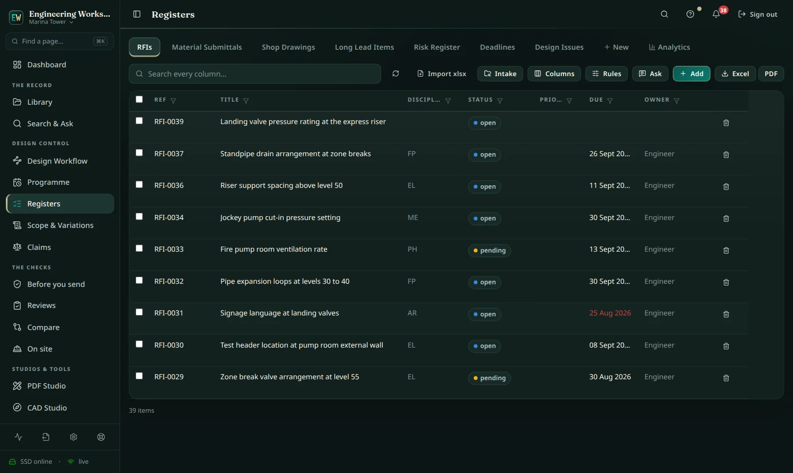
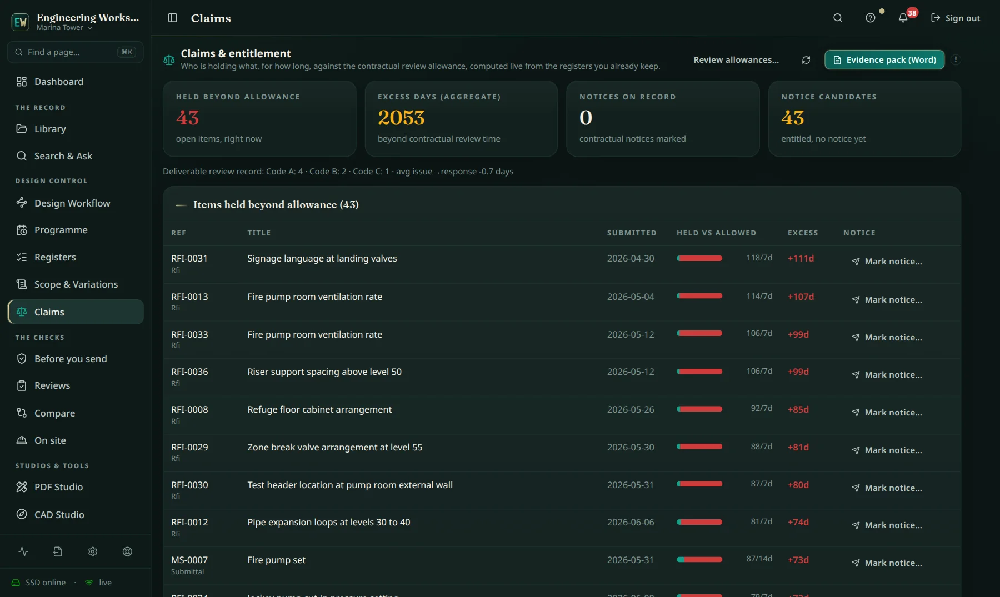
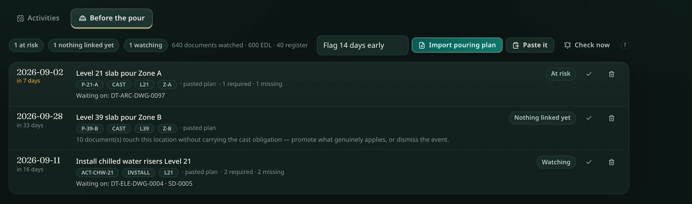
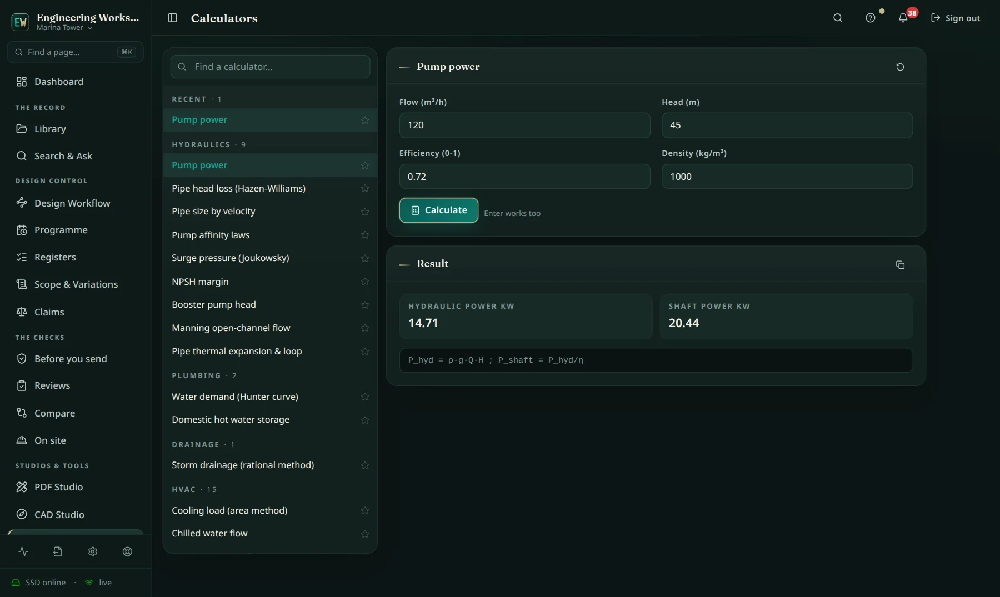
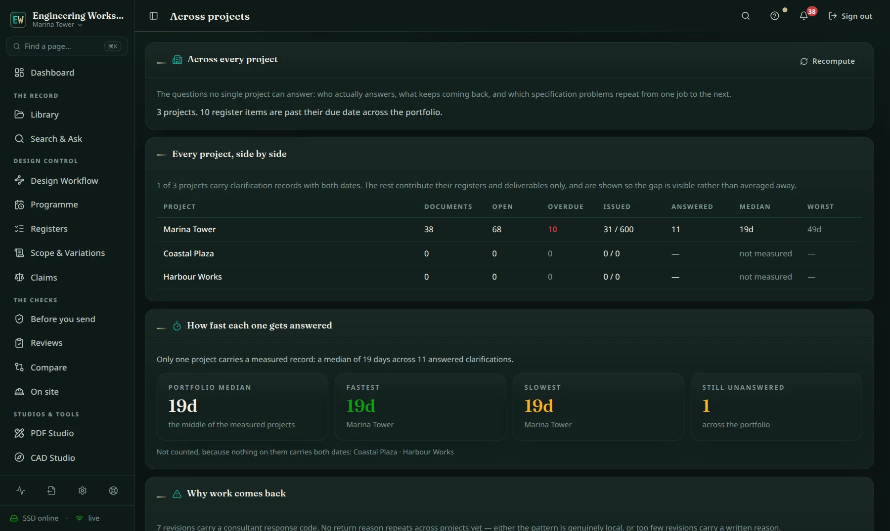

Everything the office does. Choose a pillar — see it real.
These are actual screens, not mock-ups. Every pillar has its own deep-dive page with more screenshots and detail.
Dashboard
A project-health score you can interrogate, an AI morning brief, and one “Needs attention” list ranked across registers, workflows, reviews and mail.

Design Workflow
Deliverables move through real sign-off chains — originate, check, approve, DC, issue — with working-day deadlines, escalation, response codes and as-builts.

Registers
RFIs, submittals, shop drawings, risks — one consistent grid that imports your existing exports and shows who is holding what, oldest first.

Claims
Every day a submittal sits beyond its contractual review allowance is recorded as entitlement evidence — and the monthly exhibit is one press away.

Before the pour
The concrete pouring plan is the one date on a construction site that will not wait. This holds every pour against the shop drawings and submittals that must be approved before it — and tells you the number of days you asked to be told early, while there is still time to do something.

Search & Ask
Ask across every indexed document — specifications, drawings, letters, even scans — and get answers that cite the exact page.

Mail & Follow-ups
Your sent mail becomes tracked promises: replies detected automatically, chasers drafted, working days counted on your weekend. Attachments open in place, whole threads read back with a summary on demand, and handwritten meeting notes come back as numbered briefs.

Studios
Mark up PDF drawings — clouds, callouts, stamps, RFI-linked comments — open DWG/DXF directly, and compare two revisions with every change highlighted.

Calculators
Forty-three engineering calculators — hydraulics, HVAC (fifteen of them), electrical, fire, drainage, plumbing, vertical transport — each showing its formula and its assumptions with the result.

Assistant & AI
A project-grounded assistant that searches your evidence, calculates with verified formulas and writes deliverables on your letterhead — with per-user AI accounts, badged and billed honestly.

Platform
Programme, variations, AI document reviews, multi-project workspaces, client portal, security, backups, automations — the frame that makes the pillars one product.